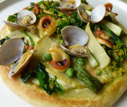

シーフードと春野菜のピザ
- 調理時間：20 分
- （一人当たり）
- カロリー：500kcal
- たんぱく質：31.9g
- 脂質：19.0g
- 塩分：4.2g


＜１８ｃｍ、１枚分＞
- ピザクラスト
- １枚
- 【完熟トマトソース】
- ・完熟トマト
- ２～３個
- ・オリーブオイル
- 少々
- 塩、コショウ
- 少々
【トッピング】
- ・菜の花
- ３０ｇ
- ・グリーンアスパラ
- １本
- ・グリーンピース（むき）
- 大さじ１
- ・タケノコ
- ７０ｇ
- ・アサリ
- ７０ｇ
- ・イイダコ
- ４０ｇ
- ・チーズ
- ４０ｇ


- 塩抜きしたアサリは殻と殻を軽くこすり合わせて水洗いし、ザルに上げておく。イイダコは食べやすい大きさに切る。
- アスパラガスと菜の花は３～４ｃｍ長さに切る。タケノコは薄切りにする。
- アスパラガス、菜の花、グリーンピース、タケノコは熱湯でサッとゆがく。（熱湯にくぐらせる程度でよい）
- 【トマトソースをつくる】
ざく切りにしたトマトをお鍋にいれて形が無くなるまで煮込み、塩とコショウで味をととのえる。仕上げにオリーブオイルを加える。
※ローリエを加えてもおいしい - ピザクラストにトマトソースをぬり、具とチーズをのせて200度のオーブンで焼く。
シーフードと春野菜のピザ
生活習慣病やダイエット中には何となくマイナスイメージのピザですが、食べ方のコツさえマスターすれば、おいしく健康的にいただけます。
脂質の多い食事をするときは、それらを抱き込んで吸収を抑え、排泄を促す食物繊維を合わせることがポイントです。生活習慣病で食事管理している人は、サラミやソーセージ類は控えめにして、野菜たくさんの大人のピザを目指しましょう。多品目をトッピングすればよく噛む効果がアップ！早食いを防止します。
家族が集まる休日に親子で作ってみませんか。手づくりピザを囲んでみんなで食べる食卓は、子ども達の記憶に残ることでしょう。ＧＷにおすすめです。